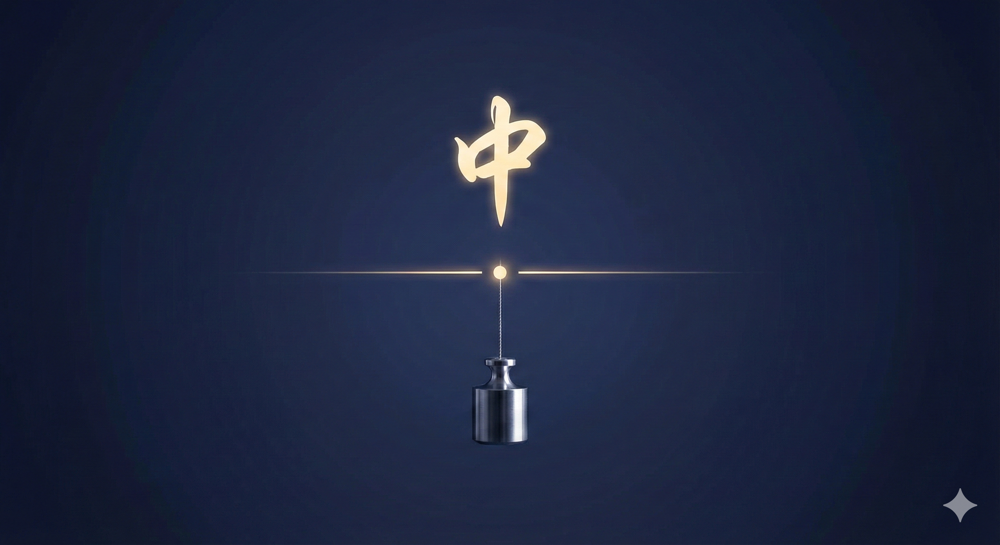

前兩天，有位同學很困惑地跑來問我一個問題。
他傳了一篇文章給我看，標題大概在說： 「業務不能什麼錢都要賺。」
但他又想到，我在課堂上常講的一句話是： 「我們做的事情，都應該要賺錢。」
於是他更混亂了，到底哪一個才是對的？
我的答案是： 「兩個都對，也兩個都錯。」
因為真正的答案，在「中庸」。
如果「什麼錢都賺」，出發點只剩下利益，甚至為了成交，不惜傷害客戶、扭曲事實。 這不是專業，而是「貪婪」。
但如果「什麼錢都不賺」，凡事只用使命感撐著，用愛硬扛，最後把自己搞到身心俱疲、生活失衡。 這也不是高尚，而是「自我消耗」。
「中庸」，不在極端
我一直想講清楚的一句話是： 「賺我該賺的錢，才叫中庸。」
我為這件事付出了「時間、專業與心力」， 承擔了「風險、責任與人脈成本」。
而我的服務，確實「解決了客戶的問題」， 也真正「替對方創造了價值」。
那麼這筆錢，不是「敢不敢賺」， 而是「本來就該賺，而且要賺得心安理得」。
這就是我認為「業務真正該走的路」。

孔子在幾千年前，其實早就把這件事說透了。
子曰：「中庸之為德也，其至矣乎，民鮮久矣。」
中庸作為一種德行，幾乎是「最高境界」。 只是「懂的人太少，做到的人更少」。
因為很多人誤會中庸是「差不多就好」、是「不要太突出」。
但剛好相反。
「中庸，從來不是平庸。」 而是一種「剔除過與不及之後，留下剛剛好到極致」的狀態。
它不是「取中間值」，而是「找到最精準的平衡點」：
暴力不對，軟弱也不對，「勇敢」才是中庸。奢侈不對，吝嗇也不對，「慷慨」才是中庸。自卑不對，自大也不對，「自信」才是中庸。溺愛孩子不對，冷漠不愛也不對，「關愛」才是中庸。公司放任不對，什麼都管也不對，「信任」才是中庸。
當然，「不學習」絕對不對； 但整天泡在書堆裡，卻「完全沒有落地實踐」，也一樣不對。 所以，「好學而能用」，才是中庸。
為什麼「中庸」這麼難？
所有真正美好的狀態，都很脆弱，也很難拿捏。 因為它們只能存在於「剛剛好」的位置。
更深層的原因是：「人腦天生就不喜歡中庸」。
大腦為了省能量，習慣把世界快速分成「好或壞、對或錯、站哪一邊」。 「極端」，對大腦來說，比平衡好理解得多。
這也是為什麼： 「越偏激的觀點」、 「越對立的內容」、 「越有情緒的文章」， 總是越容易被轉傳、被放大。
但身為一個「專業的銷售人」，我們不能順著「大腦的惰性」走。
你要刻意提醒自己，不要掉進「貪婪與無私」的二分法陷阱。
真正高級的銷售，只有一件事： 「提供極致的價值，換取合理的財富。」
🔧 你的業績卡住了嗎？因為我也走過那段「心累」的路，所以我懂你的痛。如果你想知道...你的「業務原廠設定」是適合開發還是穩定成長？你容易卡在「開發」、「開口」還是「成交」？👇 點擊連結加入 LINE私訊「想知道銷售天賦」，15分鐘幫你找到業務專屬天賦!https://line.me/ti/p/jzdho94spl

Instagram：eintaixin
個人官網